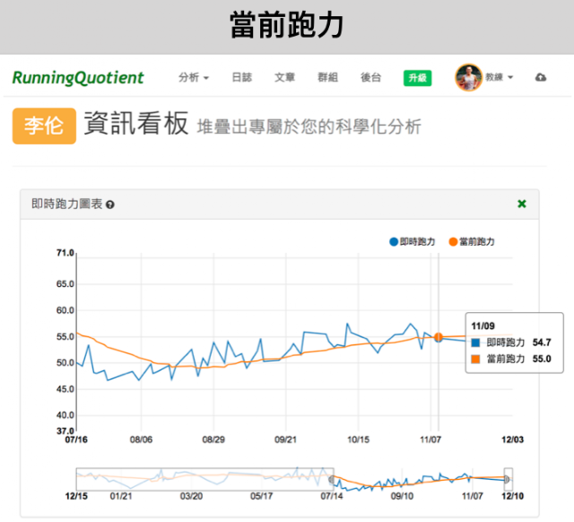
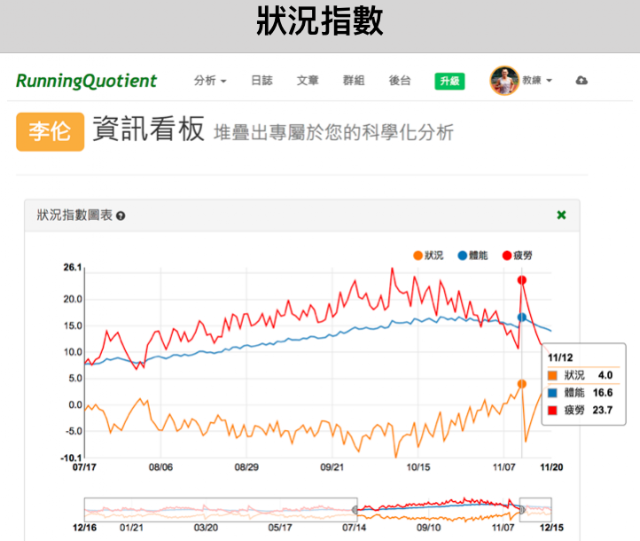

四個月全馬破三：3:07:35 → 2:58:32
李倫連續兩年都參加了上海馬拉松的訓練營，第一年是由Garmin主辦，由我擔任總教練設計課表，課表的設計邏輯以體能為主心骨，當時李倫的目標是跑進3小時30分，但四個月的訓練營使他的全馬成績從3小時48分進步到3小時13分。2016年11月上海馬拉松結束後，李倫又再把這份課表跑過一遍，三月份的無錫馬拉松又再把PB推進到3小時07分，這份課表經過多次實驗，幫助到許多人，下面把它分享出來 (使用的前提必須先知道當下的心率與配速區間)：
【2016上海訓練營的課表(可點擊)】
去年李倫參加完訓練營後的心得與分析文章：
〈月跑量不到兩百公里，一樣大破PB：3:48→3:13〉
今年的上海馬拉松，李倫又把自己的PB往前推進到三小時內(2小時58分32秒)。
破三是許多全馬跑者的目標，最常聽到他們討論的問題是「要多少跑量才能夠破三？」但訓練量一直不是重點，「訓練品質」才是關鍵，訓練品質是指熱身是否確實、技術動作是否完整、跑主課表是否專注、平常是否有有充足的主動恢復(吃夠、睡夠也有按摩與伸展)。下面是李倫這四個多月來的訓練量統計：
- 十七週平均訓練指數：103.88
- 除了第一週期比較低之外，週訓練指數大都在100~135之間徘徊，只有第12週跑到160(因為當週他去參加了一場比賽，這場比賽也使得接下來幾週的訓練有點低潮)，但由此可見適合李倫的訓練指數就是在100~135之間。
- 十七週總跑量：1038公里
- 第一週期跑量(5週)： 212公里
- 第二週期跑量(4週) ：253公里
- 第三週期跑量(4週) ：320公里
- 第四週期跑量(4週) ：253公里
- 十七週的平均跑量是：54公里/週
- 最大週跑量是91公里，超過90公里的有兩次，週跑量大都在50~60公里之間。
- 第一週期的跑量最小，週跑量平均40公里。
- 第三週期的跑量最大，週跑量平均78公里。
- 十七週平均訓練時數：276分鐘 = 4小時36分鐘/週

- 跑力，從訓練初期的49，提升到比賽當天的54.7
- 第一週期在練速度，所以跑力的計算並不精準；
- 第二週期開始有較多的長距離課表後，跑力比較符合他當時的實力。
- 跑力從第二週期中段之後開始爬升，到了第四週期開始穩定，完全符合博士課表的設計邏輯。

- 體能指數，在訓練的第三週期中段之後的體能(指數)大都在16附近，因為賽前兩週減量，所以比賽前一天稍微下滑到14.6。另外兩位首次破三跑者在比賽前一天的體能指數則分別是16.1(丁侃)與17.3(賴慶昆)、另一位全馬從2:49進步到2:41的跑者是17.8(劉偉，他是大猴子)，由此可見，全馬想要破三的話，賽前一天的體能指數調整到14.6~17.3之間就夠了。
- 雖然體能指數也是利用訓練指數带入班尼斯特（Banister）等科運動科學家所提出的「刺激—回饋理論方程式」（Impulse-Response Model Function）而來，但相對於訓練指數而言，體能指數這個數值更能代表一位跑者在體能訓練上的努力程度，我認為它每個人都不同，這也正是大/小猴子理論的觀點，每個人的體能指數應該有一個最大的適應值，不應該再練更多，大猴子練太少與小猴子練太多都不會進步，必須找到適合自己的數值，除了週跑量之外，體能指數是一個很好的指標。對想要破三的全馬跑者而言大猴子練到17~18，小猴子練到14.6就夠了。
- 狀況指數，在訓練時大都在-5附近上下震盪，但比賽當天爬升到4.0。
李倫在賽後的心得中寫下他對訓練營的詮釋：
- 「訓」，是教練指導，教練給出訓練計畫，針對每個人特點指出改進方向，目標是高於現有水平，經過努力可達到的；
- 「練」，是學員要有跳出舒適區，堅持完成教練訓練計畫的決心，獲得PB的勇氣；
- 「營」，是營造更快更強氣氛的場所，在這裡營員接受教練指導，營員們互相激勵，完成更快更強自己的打造。
訓練過程/困惑/問答
_「馬拉松比的不是速度，而是比心裡放的東西！」這句話說得極好。透過這次跟李倫合作訓練，我更深刻地體悟到，教練的工作除了開課表之外，更重要的是「在不同的時期，在跑者的心裡放進不同的東西。」_
2017年的夏天再度有緣與李倫合作一起訓練，因為這次課表是羅曼諾夫博士開的，邏輯跟前一年完全不同，已經在體能課表中獲得豐碩成績的李倫像個問題學生般一直表示出懷疑的態度……雖然一開始就很懷疑，但他還是乖乖吃課表。李倫有寫跑步日誌的習慣，下面是他在8/24練完16公里課表後的質疑：
「今天跑步訓練是16公里M心率區間跑。計畫以5:00內配速完成這個訓練。天氣比較熱32度，跑到13公里時，配速降到5:10，心率達到165。我一個全馬3:07選手，居然不能用5:00的配速跑16公里？！腳底有摩擦感，估計跑完長水泡是免不了了。這次訓練營的訓練，明顯感覺長距離訓練不足，到目前為止我們從來沒有跑過20KM以上的距離。現在我跑16KM居然感到十分艱難，不知道到時候跑42KM怎麼辦？速度感仍然不足，要么跑太快，要么又掉速厲害，無法保持穩定的配速向前奔跑。」
我試著跟他溝通，請他先不要想太多，把第二週期好好的練完再說，不要多練，也不要少練，徹底完成課表中的每個要求，如果沒進步，我再幫你質問博士，我們先選擇相信他。
我請他專注在這份課表本身，把它做好，其他的結果會自然來到。我給他的目標與方向是：
Ⓞ設定固定時間去完成課表→逐步養成習慣，形成規律。每天自發地去完成課表，而不是把自己的意志力消耗在掙扎著去完成課表上。
Ⓞ每天訓練前的熱身→讓我們在身體與心理上興奮起來，讓自己準備好去完成課表。一定要高質量地完成每週的重點項目，而不是把精力耗費在達成率以及其他不能提升自己的能力的訓練上。
Ⓞ一定嚴格按照配速區間跑步→不能太慢也不能超速。不行可以多休息，但要努力完成配速區間的要求。
Ⓞ要完美的實現相關的技術動作。不要在意步頻和步幅，而是專注在動作，技術與知覺上。一次只能專注在一件事上。
.
.
.
.
九週後第二週期結束有個十公里測驗，李倫的十公里PB從41:35提升到了38:43。他在訓練日誌中提到：「前面三週10K集訓我都沒能突破40分鐘，但今天卻一舉突破了。說明羅曼諾夫博士安排的課表極具科學性和可行性，我相信沒有前面幾週的訓練，這週的減量，今天我也不可能跑入40分鐘。」
可是他還是沒信心，十公里測驗完後的課堂上，李倫擔心地問：「對比去年九月訓練水平，30公里跑步，我E心率區間能一路保持。本週四我跑到13公里，同樣心率只能達到5:20~5:30/k，對於長距離實在沒有信心，如何解決？」
我跟他解釋：「去年我們的訓練方法是丹尼爾斯博士的訓練法，這個方法可以讓我們破四，破330，但要想突破三或者250、230需要有一個全新的技術，所以我希望去年的學員先不要再去想過去的訓練方法，既然已經跟了博士的課表，就應該全盤接受博士的訓練方法，相信博士一定能夠帶領我們PB。以前成功的道路與現在的道路都是通向成功道路。我認為對你們這些體能已經很好的學員來說更需要走博士這條路。」(這段解釋的細節其實我已經忘了，而是事後看李倫的賽後心得才直接摘錄下來的)
印象很深刻。第三週期的半馬測驗完，路上碰到李倫，他在對街對我大喊：「國峰老師，今天跑1:26，可以破三了吧！」我不希望他心中一直想著破三這個預設的目標，所以沒說什麼，只回他一個大大的微笑！！(今天只是所有訓練營的學員一起測驗，還不是正式比賽，但半馬成績已經比他過去的PB快了三分鐘。)
.
.
.
.
在剩下四個星期就要比賽了，李倫仍是個問題學生。但我最喜歡這種認真練又問題很多的跑者(但最討壓問題很多但都不認真跟課的人)，他總是能幫助我、也幫助到其他學員和創造整個訓練營更好的訓練氛圍！
他在微信上困惑地問：「我很疑惑自己為什麼比賽能夠跑入4:10/km，平時卻不能？」
我回說：「本來就不應在訓練時刻意達到比賽的配速，在比賽前『練太多』比賽可能達到的配速』正是很多人在比賽跑不出好成績的原因。你是對的，(比賽期)在『大部分的』訓練課過程中應該要比賽輕鬆一些沒錯。」
李倫再問：「但是如果平時對這個配速不熟悉，又怎麼能讓自己在比賽時輕鬆駕馭這一配速呢？四月的上海半馬我就這種狀態，一直不舒服，全程靠意志力支撐下來，多少次想放棄。」
我回復：「比賽，是一種認識自我、突破已知界線與開發未知領域的過程。我們不會知道在比賽那天可以跑出多少平均配速。所以我們無法先訂出某個配速來去熟悉或適應它。」
.
.
.
比賽前最重要的幾週關鍵時刻，出狀況了。李倫以為比賽可以當作訓練，自行去比了一場半馬，但比賽不只耗體力，在舟車勞頓下也很耗心力與精神。跑完後他寫道：「跑過終點並沒有那種精疲力竭的感覺，這個半馬感覺自己跑得好奇怪，想要跑好，但是卻無力奔跑。」
他在微信上表示，現在很不想跑，產生了極度懨跑的心情。
「比賽耗盡了他的意志力！」這是非常重大的危機，沒有鬥志的跑者是不可能在全馬中有好的表現的。
還好同組的戰友開始為他注入活力，同是本次訓練營中首次破三的跑者--賴慶崑說：「因為比賽氛圍會讓身體不自覺負荷加大。所以需要時間恢復。一定要注意調整。之前說的不要過多參加比賽也是這個道理，比賽消耗的不僅是體力，還有對比賽的激情。也就是國峰老師戰逃理論的『戰』的意志力被你消耗了，就像一個水池，水被放流掉了，需要再加滿。所以你們要趕快調整心態，把水池加滿。準備上馬！」(「上馬」是上海馬拉松的簡稱，也有上馬衝鋒戰場的雙關意涵！)
.
.
.
比賽前一週(11/05)，李倫在微信上說道：「今天的課表有速度，出門還是想按馬拉松配速跑，但跑過1公里後發現提不起速，還是按自己舒服的速度跑吧！發現原來是4:30/km，是對自己要求太低嗎？比賽臨近應該也不適合提高強度才對？就這樣又在上馬賽道上跑了一圈，邊跑邊計算比賽那天跑到這兒應該是幾點。」
我給他的建議是：「李倫，先不用去計算比賽的狀況。今天跑4:30/km很好。今天的配速不代表任何事，你必須放鬆…再放鬆一點，現在配速都不重要，你必須用拉伸和泡沬軸讓身體能更放鬆一些，多睡一點……若你能做到，比賽那天自然就會跑出好結果。」
.
.
.
2017年11月的上海馬拉松又把自己的PB往前推進到三小時內，他在這次的賽後心得中寫道：
曾經，Sub330是我的夢想，2016年夏天參加國峰老師訓練營之後，我突破了！據說，Sub300才是大神的標誌，通過2017夏天在跑步學院「上馬PB訓練營」四個月的苦練，2017年11月在上馬賽道上，我又成功了！人生沒有什麼不可能，只有你想不想去做。
--
李倫賽後心得全文：〈我的破三之路〉
--